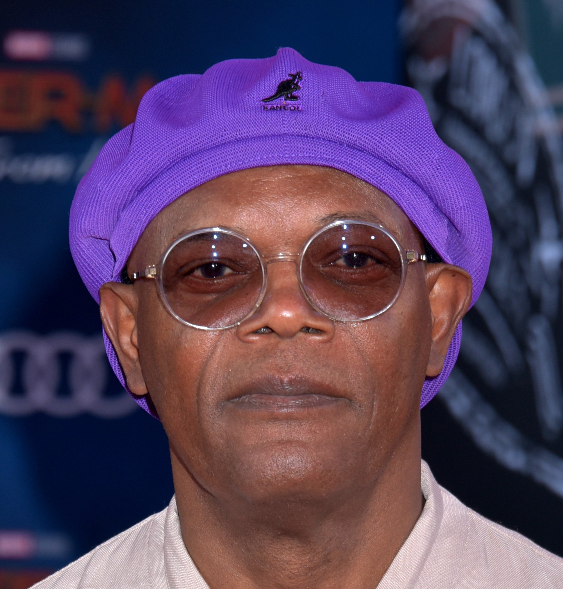

Samuel L.Jackson
Samuel Leroy Jackson, dit Samuel L. Jackson est un acteur et producteur de cinéma américain, né le 21 décembre 1948 à Washington, D.C.
Sa jeunesse
Samuel Leroy Jackson entre au Morehouse College d'Atlanta pour entreprendre des études de policier qui furent très vite interrompues. Il continua en hôtellerie restauration, son rêve était d’avoir un complexe de chambres d’hôtes, des horizons de champs de vignes, des chevaux sur des terres, bref un grand patron chef et patron chez lui 2, mais c'est avec un diplôme d'art dramatique qu'il en ressort en 1972. Il fait ses débuts au cinéma la même année dans Together for Days de Michael Schultz, mais il préfère se consacrer au théâtre en jouant à New York.
Ses passions
Samuel L. Jackson est un fan inconditionnel des Falcons, l'équipe de football américain d'Atlanta, et bien que natif de Washington, il supporte cette équipe de Géorgie. Avec le tournage du film Le 51e État qui se déroule à Liverpool, il apprécie le Liverpool Football Club. Il soutient également le Bohemian Football Club, étant donné qu'il aime l'Irlande.